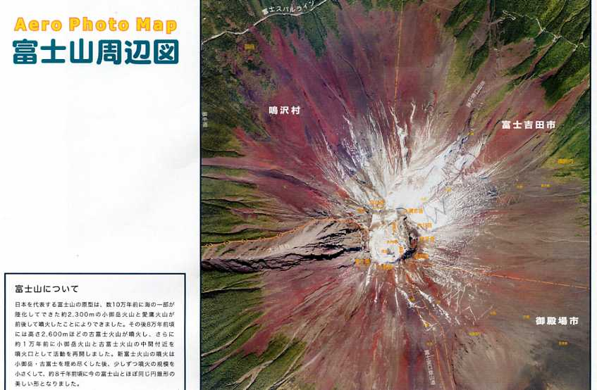

このページに掲載した地図を、許可なく複製・利用することを禁止します。
| 「地図」Vol.42 No.3添付地図 |
| “MAP”Vol.42 No.3 Attached Map |
|
エアロフォトマップ富士山周辺図 |
| Aero Photo Map “Mt. Fuji and Its Vicinity” |
| 発 行 所：株式会社エアロ・フォト・センター |
|
報告・添付地図解説 ：野崎吉信・堀田政男 2004．エアロフォトマップ 富士山周辺図について．地図 Vol.42 No.3 ： 11-12． |
| Yoshinobu NOZAKI and Masao HOTTA 2004． On“Aero Photo Map Mt.Fuji and Its Vicinity”． MAP Vol.42 No.3 ： 11-12． |
|
「富士山周辺図」、「富士山頂」、「河口湖周辺図」、「富士山周辺鳥瞰写真図」と「富士周辺余色実体図」の、合計５図が両面に印刷され、特に「富士山周辺図」と「富士山周辺鳥瞰写真図」は、非常に見応えのあるものとなっています。作成工程に関する詳しい解説は、「地図」Vol.42 No.3に掲載の【報告・添付地図解説】をご覧下さい。 |
|  |
|
このページに掲載した地図を、許可なく複製・利用することを禁止します。 |